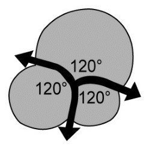
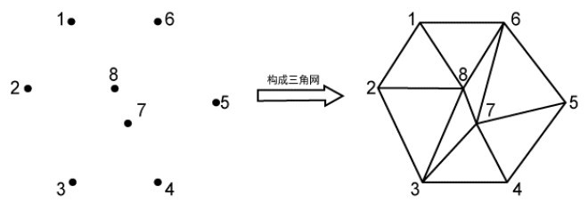
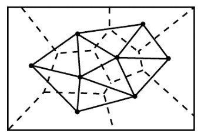

在《最强大脑》第三季中英对决赛中，出现了一个很难的竞技项目——泰森多边形。屏幕左侧出现一个多边形，右侧是几百个离散点，选手们要利用建立泰森多边形的规则，在脑海中找到一个与左侧一致的多边形，两个图形重合一致，并用时较少者获胜。
该场竞赛的国际评审托马斯表示：“这个项目是对参赛者眼力、脑力、空间想象力及对成像、几何图形等多方面知识熟练程度的考验，非常难。”主持人蒋昌建表示：“如果你能看懂这个规则，你就是半个最强大脑。”比赛持续了长达3个小时的时间，最后中方获胜。
在一个玻璃杯里配制比较浓的肥皂水，用一根吸管去吹，杯内会生出许多相互挤压的肥皂泡；上海人有个饮食习惯叫作吃泡饭，就是把吃剩的米饭倒入凉水中放在灶上煮，等开锅后就成了泡饭，在开锅时也会有类似于肥皂泡的泡沫挤压在一起；在平面上，也有相似的情况发生，例如极度干旱的大地上，土地龟裂成一块一块的，像一个个多边形，等等。
这些几何形象具有数学上的统一性。在平面中形似杂乱无章的凸多边形，在空间里形似杂乱无章的凸多面体，人们称诸如此类的结构为无序结构。系统研究这种结构的第一人是俄国数学家沃热诺伊（Voronoi），所以这种结构被称为Voronoi图。
数学家牛顿曾观测过肥皂泡。肥皂泡的形状受表面张力的控制，表面张力总是使表面积尽可能地小。每个肥皂泡里都包封有一定量的空气，结果使得表面积的减少有了一个最低限度，这就解释了为什么单个肥皂泡总是会变成球状，而一大堆肥皂泡集在一起便会产生不同的造型。牛顿发现，在肥皂泡沫中，肥皂泡的边缘相交成120°的角，这称为“三部结合”。在一个三部结合点处有3条线段相会，两两相交成120°角（如图8-1所示）。
3个 120°使人们不禁想起费马定理：在△ABC 内找一点 P，使PA+PB+PC的距离之和最小，答案就是P点对三点的张角均为120°。距离是数学研究的基本对象之一，数学家指出：“Voronoi图实质是一种在自然界中宏观和微观实体间以距离相互作用的普遍结构。”
我们无法揣测沃热诺伊创建Voronoi图的灵感和出发点，但上述的肥皂泡结构是否能给大家以启示呢？

图8-1
Voronoi图可由下面的问题引出：
给定平面中的N个点，对于任意一点Pi，平面中距离点Pi比距离其他点更近的区域是什么？即区域内的任意一点（x，y）距Pi比距离平面中其他给定的点都近。
首先从最简单的情况入手，对于平面中的任意两点A、B，距离A点比距离B点近的区域是由线段A、B的垂直平分线确定的包含A的那个半平面V（A）。如果点集由N个点组成，距离点Pi比距离其他点更近的点的区域是包含点Pi的N-1个半平面的交集。这N-1个半平面是由点Pi与其他点的垂直平分线确定的。显然，V（i）是由一些垂直平分线构成的多边形。它将整个平面分成N个区域，每个区域包含一个点，称为种子点。
其次，Voronoi图的边是点集中某对点的中垂线上的一条线段或者射线。Voronoi图至多有2n-5个顶点和3n-6条边。在Voronoi图的构建中，首先要将离散的点构成三角网。对于给定的初始点集P，有多种三角网剖分方式，其中Delaunay三角网具有以下特征。
① Delaunay三角网是唯一的；
②三角网的外边界构成了点集P的凸多边形“外壳”；
③没有任何点在三角形的外接圆内部；
④形成的三角网总是具有最优的形状特征，任意两个相邻三角形形成的凸四边形的对角线如果可以互换的话，那么两个三角形的6个内角中最小的角度不会变大。
在实际操作构网时，总是选择最临近的点形成三角形，并且不与约束线段相交。图8-2是用8个点构造三角网的例子。

图8-2
构建Delaunay三角网后，求出各三角形的外心（外接圆圆心）并连接，就可以得到Voronoi多边形。在图8-3中，各小圆点即已知的离散点，实线三角形是Delaunay三角网，虚线多边形即Voronoi多边形。

图8-3
● 气象学：荷兰气候学家泰森提出了一种根据离散分布的气象站的降雨量来计算平均降雨量的方法，即将所有相邻的气象站连成三角形，然后做出每个三角形各边的垂直平分线，于是每个气象站周围的若干垂直平分线便围成一个多边形。用这个多边形内所包含的唯一一个气象站的降雨量来表示这个多边形区域内的降雨强度，并称这个多边形为泰森多边形。所以，Voronoi图又称泰森多边形。
●人类学和考古学：考察由不同的部落、首领、堡垒等所确定的势力范围或影响范围。
●天文学：识别星群和星系群，比如由太阳和其他恒星所确定的星系。
●机器人技术：存在障碍物情况下的路径规划。
●统计学：分析统计聚类。
●动物学：动物疆域的分析。
最有趣的一个应用是近年来发展起来的细胞几何学。对于三维空间的情况，只需把平面情形的垂直平分线改成垂直平分面，凸多边形由凸多面体代替，面积由体积代替，上述论述即可推广到三维空间，并拥有一套相似的概念与结论。
上述数学模型反映的实际情况是：每个细胞核都以相同的速度向各个方向均匀生长，直到细胞间互相接触挤压而停止，于是构成了细胞的机体。
Voronoi图的概念源于生活，对它的定义、求解和研究都是为了应用于实际以产生价值，反过来应用又推进了研究。创新和应用正是数学发展的根本动力。